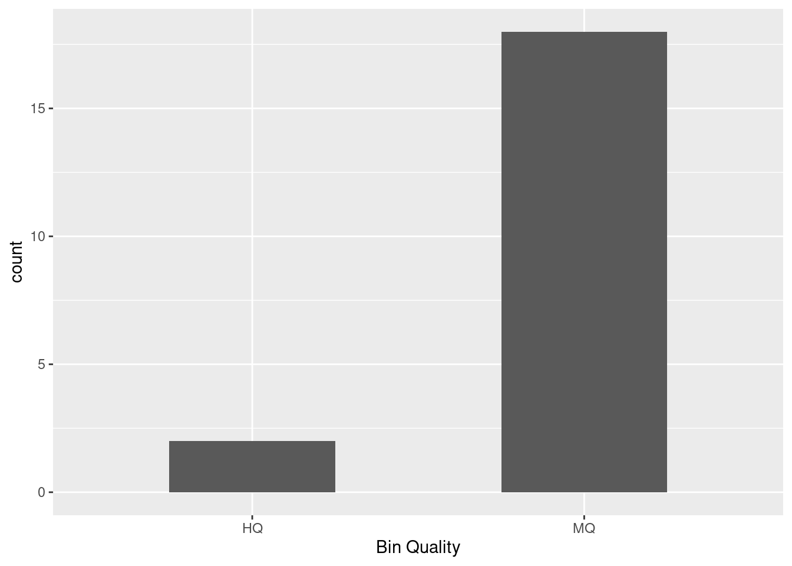

library(tidyverse)
library(knitr)Results
Libraries and Packages
if (!require("BiocManager", quietly = TRUE))
install.packages("BiocManager")
BiocManager::install("ggtree")library(tidyverse)
library(ggtree)
# added treeio and ggimage library
library(treeio)
library(ggimage)
library(rphylopic)library(tidyverse)
library(knitr)
library(ggtree)
library(TDbook) #A Companion Package for the Book "Data Integration, Manipulation and Visualization of Phylogenetic Trees" by Guangchuang Yu (2022, ISBN:9781032233574).
library(ggimage)
library(rphylopic)
library(treeio)
library(tidytree)
library(ape)
library(TreeTools)
library(phytools)
library(ggnewscale)
library(ggstar)if (!require("BiocManager", quietly = TRUE))
install.packages("BiocManager")
BiocManager::install("Biostrings")install.packages("boot")
install.packages("codetools")
install.packages("lattice")
install.packages("survival")Loaded Data
NEON_MAGs <- read_csv("data/NEON/GOLD_Study_ID_Gs0161344_NEON_edArchaea.csv") %>%
# remove columns that are not needed for data analysis
select(-c(`GOLD Study ID`, `Bin Methods`, `Created By`, `Date Added`)) %>%
# create a new column with the Assembly Type
mutate("Assembly Type" = case_when(`Genome Name` == "NEON combined assembly" ~ `Genome Name`,
TRUE ~ "Individual")) %>%
mutate_at("Assembly Type", str_replace, "NEON combined assembly", "Combined") %>%
separate(`GTDB-Tk Taxonomy Lineage`, c("Domain", "Phylum", "Class", "Order", "Family", "Genus"), "; ", remove = FALSE) %>%
# Get rid of the the common string "Soil microbial communities from "
mutate_at("Genome Name", str_replace, "Terrestrial soil microbial communities from ", "") %>%
# Use the first `-` to split the column in two
separate(`Genome Name`, c("Site","Sample Name"), " - ") %>%
# Get rid of the the common string "S-comp-1"
mutate_at("Sample Name", str_replace, "-comp-1", "") %>%
# separate the Sample Name into Site ID and plot info
separate(`Sample Name`, c("Site ID","subplot.layer.date"), "_", remove = FALSE,) %>%
# separate the plot info into 3 columns
separate(`subplot.layer.date`, c("Subplot", "Layer", "Date"), "-") NEON_metagenomes <- read_tsv("data/NEON/exported_img_data_Gs0161344_NEON.tsv") %>%
rename(`Genome Name` = `Genome Name / Sample Name`) %>%
filter(str_detect(`Genome Name`, 're-annotation', negate = T)) %>%
filter(str_detect(`Genome Name`, 'WREF plot', negate = T)) NEON_metagenomes <- NEON_metagenomes %>%
# Get rid of the the common string "Soil microbial communities from "
mutate_at("Genome Name", str_replace, "Terrestrial soil microbial communities from ", "") %>%
# Use the first `-` to split the column in two
separate(`Genome Name`, c("Site","Sample Name"), " - ") %>%
# Get rid of the the common string "-comp-1"
mutate_at("Sample Name", str_replace, "-comp-1", "") %>%
# separate the Sample Name into Site ID and plot info
separate(`Sample Name`, c("Site ID","subplot.layer.date"), "_", remove = FALSE,) %>%
# separate the plot info into 3 columns
separate(`subplot.layer.date`, c("Subplot", "Layer", "Date"), "-") NEON_chemistry <- read_tsv("data/NEON/neon_plot_soilChem1_metadata.tsv") %>%
# remove -COMP from genomicsSampleID
mutate_at("genomicsSampleID", str_replace, "-COMP", "") NEON_MAGs_metagenomes_chemistry <- NEON_MAGs %>%
left_join(NEON_metagenomes, by = "Sample Name") %>%
left_join(NEON_chemistry, by = c("Sample Name" = "genomicsSampleID"))
head(NEON_MAGs_metagenomes_chemistry)# A tibble: 6 × 93
`Bin ID` Site.x `Sample Name` `Site ID.x` Subplot.x Layer.x Date.x
<chr> <chr> <chr> <chr> <chr> <chr> <chr>
1 3300060887_39 Guanica St… GUAN_042-M-2… GUAN 042 M 20210…
2 3300060914_30 Guanica St… GUAN_043-M-2… GUAN 043 M 20210…
3 3300060650_39 Healy, Den… HEAL_048-O-2… HEAL 048 O 20210…
4 3300067032_2117 NEON combi… <NA> <NA> <NA> <NA> <NA>
5 3300060650_21 Healy, Den… HEAL_048-O-2… HEAL 048 O 20210…
6 3300060650_24 Healy, Den… HEAL_048-O-2… HEAL 048 O 20210…
# ℹ 86 more variables: `IMG Genome ID.x` <dbl>, `Bin Quality` <chr>,
# `Bin Lineage` <chr>, `GTDB-Tk Taxonomy Lineage` <chr>, Domain.x <chr>,
# Phylum <chr>, Class <chr>, Order <chr>, Family <chr>, Genus <chr>,
# `Bin Completeness` <dbl>, `Bin Contamination` <dbl>,
# `Total Number of Bases` <dbl>, `5s rRNA` <dbl>, `16s rRNA` <dbl>,
# `23s rRNA` <dbl>, `tRNA Genes` <dbl>, `Gene Count` <dbl>,
# `Scaffold Count` <dbl>, `Assembly Type` <chr>, taxon_oid <dbl>, …NEON_MAGs_metagenomes_chemistry_alphaproteobacteria <- NEON_MAGs_metagenomes_chemistry %>%
left_join(NEON_metagenomes, by = "Sample Name") %>%
left_join(NEON_chemistry, by = c("Sample Name" = "genomicsSampleID")) %>%
filter(`Class`== "Alphaproteobacteria")
head(NEON_MAGs_metagenomes_chemistry_alphaproteobacteria)# A tibble: 6 × 159
`Bin ID` Site.x `Sample Name` `Site ID.x` Subplot.x Layer.x Date.x
<chr> <chr> <chr> <chr> <chr> <chr> <chr>
1 3300061639_24 Niwot Ridge… NIWO_004-O-2… NIWO 004 O 20210…
2 3300067032_513 NEON combin… <NA> <NA> <NA> <NA> <NA>
3 3300060645_18 Caribou Cre… BONA_006-O-2… BONA 006 O 20210…
4 3300060649_28 Caribou Cre… BONA_001-O-2… BONA 001 O 20210…
5 3300060649_46 Caribou Cre… BONA_001-O-2… BONA 001 O 20210…
6 3300060656_60 Toolik Fiel… TOOL_005-O-2… TOOL 005 O 20210…
# ℹ 152 more variables: `IMG Genome ID.x` <dbl>, `Bin Quality` <chr>,
# `Bin Lineage` <chr>, `GTDB-Tk Taxonomy Lineage` <chr>, Domain.x <chr>,
# Phylum <chr>, Class <chr>, Order <chr>, Family <chr>, Genus <chr>,
# `Bin Completeness` <dbl>, `Bin Contamination` <dbl>,
# `Total Number of Bases` <dbl>, `5s rRNA` <dbl>, `16s rRNA` <dbl>,
# `23s rRNA` <dbl>, `tRNA Genes` <dbl>, `Gene Count` <dbl>,
# `Scaffold Count` <dbl>, `Assembly Type` <chr>, taxon_oid.x <dbl>, …NEON_MAGs_metagenomes_chemistry_alphaproteobacteria %>%
ggplot(aes(x = `Site.x`, y = soilTemp.x)) +
geom_boxplot()
NEON_chemistry_select <- NEON_chemistry %>%
select(`genomicsSampleID`, `siteID`, `nlcdClass`)
head(NEON_chemistry_select)# A tibble: 6 × 3
genomicsSampleID siteID nlcdClass
<chr> <chr> <chr>
1 GUAN_048-M-20210920 GUAN evergreenForest
2 GUAN_042-M-20210920 GUAN evergreenForest
3 GUAN_043-M-20210921 GUAN evergreenForest
4 GUAN_007-M-20210922 GUAN evergreenForest
5 GUAN_004-M-20210922 GUAN evergreenForest
6 GUAN_003-M-20210922 GUAN evergreenForestNEON_MAGs_select <- NEON_MAGs %>%
select(`Sample Name`, `Site ID`, `GTDB-Tk Taxonomy Lineage`)
head(NEON_MAGs)# A tibble: 6 × 27
`Bin ID` Site `Sample Name` `Site ID` Subplot Layer Date `IMG Genome ID`
<chr> <chr> <chr> <chr> <chr> <chr> <chr> <dbl>
1 3300060887_… Guan… GUAN_042-M-2… GUAN 042 M 2021… 3300060887
2 3300060914_… Guan… GUAN_043-M-2… GUAN 043 M 2021… 3300060914
3 3300060650_… Heal… HEAL_048-O-2… HEAL 048 O 2021… 3300060650
4 3300067032_… NEON… <NA> <NA> <NA> <NA> <NA> 3300067032
5 3300060650_… Heal… HEAL_048-O-2… HEAL 048 O 2021… 3300060650
6 3300060650_… Heal… HEAL_048-O-2… HEAL 048 O 2021… 3300060650
# ℹ 19 more variables: `Bin Quality` <chr>, `Bin Lineage` <chr>,
# `GTDB-Tk Taxonomy Lineage` <chr>, Domain <chr>, Phylum <chr>, Class <chr>,
# Order <chr>, Family <chr>, Genus <chr>, `Bin Completeness` <dbl>,
# `Bin Contamination` <dbl>, `Total Number of Bases` <dbl>, `5s rRNA` <dbl>,
# `16s rRNA` <dbl>, `23s rRNA` <dbl>, `tRNA Genes` <dbl>, `Gene Count` <dbl>,
# `Scaffold Count` <dbl>, `Assembly Type` <chr>filtered_data <- NEON_MAGs_metagenomes_chemistry %>%
filter(`Site.x` == "Chase Lake Wetlands")NEON_MAGs_select_WOOD <- NEON_MAGs_select %>%
filter(`Site ID`== "WOOD")
head(NEON_MAGs_select_WOOD)# A tibble: 6 × 3
`Sample Name` `Site ID` `GTDB-Tk Taxonomy Lineage`
<chr> <chr> <chr>
1 WOOD_024-M-20210714 WOOD Archaea; Nitrososphaerota
2 WOOD_004-M-20210714 WOOD Archaea; Nitrososphaerota; Nitrososphaeria
3 WOOD_005-M-20210708 WOOD Archaea; Nitrososphaerota; Nitrososphaeria; Nit…
4 WOOD_001-M-20210714 WOOD Archaea; Nitrososphaerota; Nitrososphaeria; Nit…
5 WOOD_043-M-20210712 WOOD Archaea; Nitrososphaerota; Nitrososphaeria; Nit…
6 WOOD_004-M-20210714 WOOD Archaea; Nitrososphaerota; Nitrososphaeria; Nit…NEON_metagenomes_select <- NEON_metagenomes %>%
select(`Sample Name`, `Site ID`, `Ecosystem Subtype`)
head(NEON_metagenomes_select)# A tibble: 6 × 3
`Sample Name` `Site ID` `Ecosystem Subtype`
<chr> <chr> <chr>
1 CLBJ_006-M-20210506 CLBJ Grasslands
2 CLBJ_002-M-20210506 CLBJ Grasslands
3 WOOD_004-M-20210714 WOOD Wetlands
4 TOOL_002-O-20210804 TOOL Tundra
5 WREF_004-M-20210622 WREF Temperate forest
6 TEAK_004-O-20210726 TEAK Temperate forest NEON_metagenomes_select_WOOD <- NEON_MAGs_metagenomes_chemistry %>%
filter(`Site ID.x`== "WOOD")
head(NEON_metagenomes_select_WOOD)# A tibble: 6 × 93
`Bin ID` Site.x `Sample Name` `Site ID.x` Subplot.x Layer.x Date.x
<chr> <chr> <chr> <chr> <chr> <chr> <chr>
1 3300060657_10 Chase Lake W… WOOD_024-M-2… WOOD 024 M 20210…
2 3300060885_74 Chase Lake W… WOOD_004-M-2… WOOD 004 M 20210…
3 3300060747_2 Chase Lake W… WOOD_005-M-2… WOOD 005 M 20210…
4 3300060897_37 Chase Lake W… WOOD_001-M-2… WOOD 001 M 20210…
5 3300060731_25 Chase Lake W… WOOD_043-M-2… WOOD 043 M 20210…
6 3300060885_79 Chase Lake W… WOOD_004-M-2… WOOD 004 M 20210…
# ℹ 86 more variables: `IMG Genome ID.x` <dbl>, `Bin Quality` <chr>,
# `Bin Lineage` <chr>, `GTDB-Tk Taxonomy Lineage` <chr>, Domain.x <chr>,
# Phylum <chr>, Class <chr>, Order <chr>, Family <chr>, Genus <chr>,
# `Bin Completeness` <dbl>, `Bin Contamination` <dbl>,
# `Total Number of Bases` <dbl>, `5s rRNA` <dbl>, `16s rRNA` <dbl>,
# `23s rRNA` <dbl>, `tRNA Genes` <dbl>, `Gene Count` <dbl>,
# `Scaffold Count` <dbl>, `Assembly Type` <chr>, taxon_oid <dbl>, …NEON_metagenomes_select_WOOD %>%
ggplot(aes(x = `Site.x`, y = soilTemp)) +
geom_boxplot()
NEON_metagenomes_select_WOOD %>%
left_join(NEON_MAGs_select_WOOD, by = "Sample Name")# A tibble: 3,940 × 95
`Bin ID` Site.x `Sample Name` `Site ID.x` Subplot.x Layer.x Date.x
<chr> <chr> <chr> <chr> <chr> <chr> <chr>
1 3300060657_10 Chase Lake … WOOD_024-M-2… WOOD 024 M 20210…
2 3300060885_74 Chase Lake … WOOD_004-M-2… WOOD 004 M 20210…
3 3300060885_74 Chase Lake … WOOD_004-M-2… WOOD 004 M 20210…
4 3300060885_74 Chase Lake … WOOD_004-M-2… WOOD 004 M 20210…
5 3300060885_74 Chase Lake … WOOD_004-M-2… WOOD 004 M 20210…
6 3300060885_74 Chase Lake … WOOD_004-M-2… WOOD 004 M 20210…
7 3300060885_74 Chase Lake … WOOD_004-M-2… WOOD 004 M 20210…
8 3300060885_74 Chase Lake … WOOD_004-M-2… WOOD 004 M 20210…
9 3300060885_74 Chase Lake … WOOD_004-M-2… WOOD 004 M 20210…
10 3300060885_74 Chase Lake … WOOD_004-M-2… WOOD 004 M 20210…
# ℹ 3,930 more rows
# ℹ 88 more variables: `IMG Genome ID.x` <dbl>, `Bin Quality` <chr>,
# `Bin Lineage` <chr>, `GTDB-Tk Taxonomy Lineage.x` <chr>, Domain.x <chr>,
# Phylum <chr>, Class <chr>, Order <chr>, Family <chr>, Genus <chr>,
# `Bin Completeness` <dbl>, `Bin Contamination` <dbl>,
# `Total Number of Bases` <dbl>, `5s rRNA` <dbl>, `16s rRNA` <dbl>,
# `23s rRNA` <dbl>, `tRNA Genes` <dbl>, `Gene Count` <dbl>, …Graphs
Lab 12
NEON_MAGs_metagenomes_chemistry_alphaproteobacteria %>%
ggplot(aes(x = `soilTemp.x`, y = Site.x)) +
geom_boxplot()
ggplot(NEON_MAGs_metagenomes_chemistry_alphaproteobacteria, aes(x = `soilTemp.x`, y = `Ecosystem Subtype.x`, color = Class)) +
geom_point() +
labs(title = "Scatterplot of Ecosystem Subtype vs Soil Temperature",
x = "soilTemp",
y = "Ecosystem Subtype",
color = "Order")
NEON_MAGs_select_WOOD %>%
ggplot(aes(x = `Site ID`, y = `GTDB-Tk Taxonomy Lineage`)) +
geom_point()
ggplot(NEON_MAGs_metagenomes_chemistry_alphaproteobacteria, aes(x = `Site.x`, y = `Geographic Location.x`, fill = Family)) +
geom_boxplot() +
labs(title = "Violin Plot of Geographic Location by Site",
x = "Site",
y = "Geographic Location",
fill = "Family") +
scale_x_discrete(labels = abbreviate) +
theme(axis.text.x = element_text(angle = 60, hjust = 1, vjust = 1, size = 8))
NEON_MAGs_metagenomes_chemistry_alphaproteobacteria %>%
ggplot(aes(x = `Site.x`, y = `Geographic Location.x`)) +
geom_boxplot()
NEON_MAGs_metagenomes_chemistry_alphaproteobacteria %>%
ggplot(aes(x = `Site.x`, y = `Geographic Location.x`)) +
geom_boxplot() +
labs(
title = "Boxplot of Geographic Location by Site",
x = "Site",
y = "Geographic Location"
) +
theme(axis.text.x = element_text(angle = 45, hjust = 1))